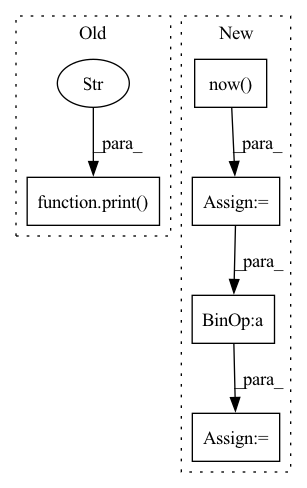

Pattern ID :32313
Before Change
target_mesh.deleteFace(to_delete[idx] - idx) // adjust for face_id shift after removal
print("Removed ", to_delete[idx])
print("Removal finished" )
cmds.delete(camera_surface_obj) // clean-up
if __name__ == "__main__":After Change
// Removing the faces
// TODO use cmds.polyDelFacet instead -- could be faster >>
start_time = datetime.now()
to_delete = sorted(to_delete) // for simple id adjustment
for idx in range(len(to_delete)):
target_mesh.deleteFace(to_delete[idx] - idx) // adjust for face_id shift after removal
// print("Removed ", to_delete[idx])
passed = datetime.now() - start_time
print("Removal finished after {}".format(passed.strftime("%H:%M:%S")))
cmds.delete(camera_surface_obj) // clean-upIn pattern: SUPERPATTERN
Frequency: 3
Non-data size: 5
Instances Fragment ID: 94471073
Project Name: maria-korosteleva/garment-pattern-estimation
Commit Name: 40405b972c7936422b7cc3151f0db9b5798f6da3
Time: 2020-11-29
Author: mariako@kaist.ac.kr
File Name: packages/mayaqltools/scan_imitation.py
M Class Name: AnonimousClass
N Class Name: AnonimousClass
M Method Name: remove_invisible(3)
N Method Name: remove_invisible(3)
M Parent Class:
N Parent Class:
M File Name: packages/mayaqltools/scan_imitation.py
N File Name: packages/mayaqltools/scan_imitation.py
M Start Line: 124
M End Line: 142
N Start Line: 138
N End Line: 145
Before Change
print(f"Best validation loss: {best_valid_loss}||Validation loss: {valid_loss}||Valid accuracy: {valid_accuracy}")
print(f"Training finished!" )
def validation(self):
After Change
train_losses.append(loss.item())
end_time = datetime.datetime.now()
training_time = end_time - start_time
minutes = training_time.seconds // 60
seconds = training_time.seconds
mean_train_loss = np.mean(train_losses)
print(f"//////////////////////////////////////// Epoch: {epoch} ////////////////////////////////////////")
Fragment ID: 94471072
Project Name: devjwsong/transformer-translator-pytorch
Commit Name: d377a69e76dcfd79366898a32ea36adf101422ee
Time: 2020-04-30
Author: enflwodn@gmail.com
File Name: src/main.py
M Class Name: Manager
N Class Name: Manager
M Method Name: train(1)
N Method Name: train(1)
M Parent Class:
N Parent Class:
M File Name: src/main.py
N File Name: src/main.py
M Start Line: 61
M End Line: 113
N Start Line: 59
N End Line: 108
Before Change
if run % self.UPDATE_EVERY == 0:
time_spent = datetime.datetime.now() - epoch_start_time
epoch_start_time = datetime.datetime.now()
print(
"\nRun:",
run,
"Average:",
total_reward_in_epoch / self.UPDATE_EVERY,
"epsilon",
self.epsilon,
"time spent" ,
time_spent,
)
if self.config["save_model"] and total_reward_in_epoch / self.UPDATE_EVERY > self.max_avg:
self.max_avg = total_reward_in_epoch / self.UPDATE_EVERY
print(f"\nSaving model . . .\n")
utils.save_dqn_model(self.deepq, start_time_format, total_reward_in_epoch / self.UPDATE_EVERY)After Change
logging.info("\ndemonstration episode : {}, reward : {}".format(i, rew))
def main(self):
epoch_start_time = datetime.datetime.now()
logs_dir = "logs/cartpole/dqn/training/"
logs_file_name = "logs_file_" + str(self.RANDOM_START_LEVEL) + "_" + str(
self.RANDOM_PERTURBATIONS_LEVEL) + "_" + str(epoch_start_time) \
+ str(self.PERTURBATIONS_INTENSITY) + ".log"
logging.basicConfig(filename=logs_dir + logs_file_name, filemode="a",
level=self.LOGGING_LEVEL,
format="%(name)s - %(levelname)s - %(message)s") Fragment ID: 94471099
Project Name: jderobot/rl-studio
Commit Name: a7469f2963188c828794b54185f3eca38c8159b6
Time: 2022-09-24
Author: ruben.lucas.zaragoza@hotmail.com
File Name: rl_studio/agents/cartpole/train_dqn.py
M Class Name: DQNCartpoleTrainer
N Class Name: DQNCartpoleTrainer
M Method Name: main(1)
N Method Name: main(1)
M Parent Class:
N Parent Class:
M File Name: rl_studio/agents/cartpole/train_dqn.py
N File Name: rl_studio/agents/cartpole/train_dqn.py
M Start Line: 133
M End Line: 173
N Start Line: 140
N End Line: 195